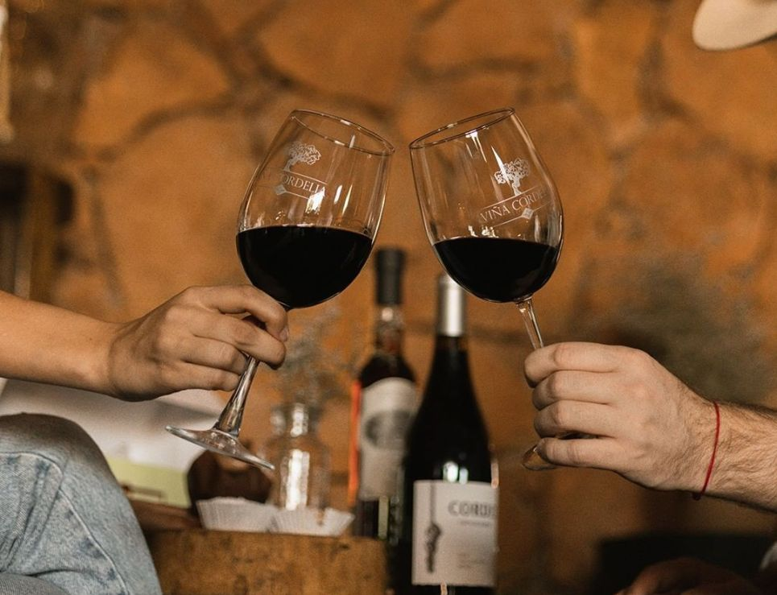

Explora cada una de las vinícolas que forman parte de esta experiencia única. Vive el sabor, la tradición y la cultura de nuestra tierra.
Ver TodoTe damos la más cordial bienvenida a Tierras de Vinos, una iniciativa que celebra la riqueza vitivinícola de Pabellón de Arteaga. A través de esta guía local podrás descubrir los espacios más destacados para disfrutar de los mejores vinos de la región, acompañados por la calidez de nuestra gente y un sabor auténtico. Explora y déjate envolver por la experiencia enológica que ofrece nuestro municipio.

Descubre las vinicola más importantes de Pabellón de Arteaga